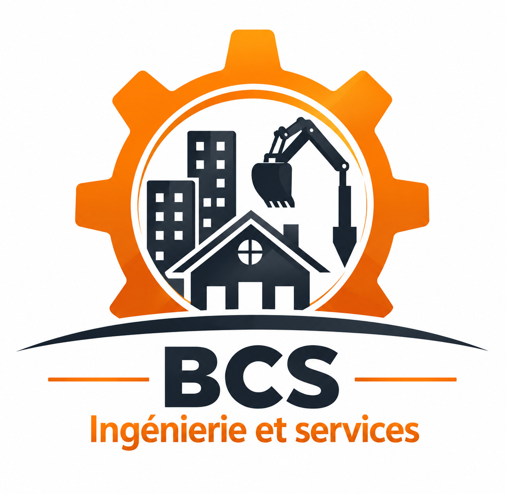
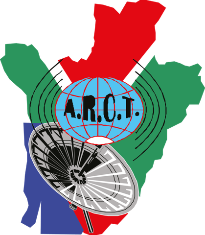

Veille
Technologie
IA, cybersécurité et Cloud : suivre les évolutions qui transforment les outils métiers.
Consultant en Transformation digitale|Développeur Power Platform , Low-code & IA.
Jeune diplômé BAC+5 (Master 2 MIAGE), j'évolue à l'interface du métier et de la technique : analyse des besoins, pilotage de projet en mode agile, conception de solutions low-code et data, support utilisateurs et conduite du changement. Du support IT aux dashboards de conformité, du backlog à la recette, j'ai travaillé en France et en Afrique centrale, auprès de banques, d'entreprises du BTP, d'associations et d'organismes publics. La Power Platform est l'un de mes outils, pas mon seul terrain : ce qui compte, c'est la solution adaptée au besoin, avec rigueur, curiosité et sens du service.
Crédit Agricole Payment Services · Guyancourt · Stage 6 mois
Projet académique avec Sopra Steria · Bordeaux
JMC · Bordeaux · Stage

BCS SARL · Bukavu, RDC · CDI

ARCT · Bujumbura, Burundi · Stage de licence, 3 mois
Université de Bordeaux · Talence
Ingénierie logicielle, architecture des SI, gestion de projet IT & Agile, gouvernance,analyse et audit SI, cybersécurité, transformation digitale, machine learning, marketing digital, analyse de données, ERP, intelligence artificielle....
International University of Equator · Bujumbura, Burundi
Langages de programmation: C, C++, HTML5/CSS3, JavaScript, Java, PHP, Python, Kotlin, MySQL/SQL, Ingénierie de test logiciel, Algorithmique & structuration des données, Intelligence artificielle, Simulation & modelisation,etc.
Institut d'Ibanda· Bukavu, Répubique Démocratique de Congo
Math(Algèbre,Trigonomètrie,Géomètrie,Statistique), Physique, Dessin scientifique,Informatique...
IA, cybersécurité et Cloud : suivre les évolutions qui transforment les outils métiers.
Un intérêt pour l'univers automobile et ses innovations.
Un sport collectif, goût de l'esprit d'équipe.
RDC, Burundi, France, Rwanda, Belgique : curiosité pour d'autres cultures.
Disponible immédiatement pour un échange, mobilité France entière.